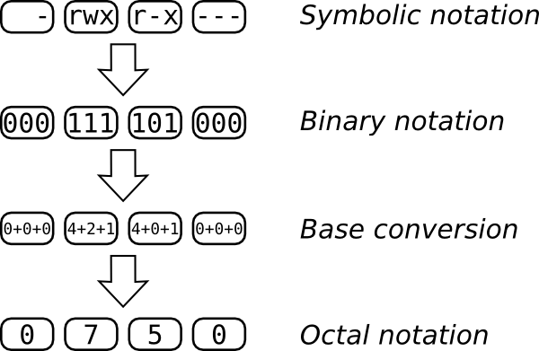

CommandLineIntro: Permissions
Your computer system stores a lot of information about files that normally remains hidden as you create and play with the files. One set of file attributes you'll run into, though, is permissions. Who's able to edit your files? Hopefully not every person who logs in to the system (and many systems are still shared by multiple people nowadays). This section discussion ownership and permissions.
First, let's see what the system itself can tell us about its files. We'll execute the familiar ls command with an addition -l (that's the lower-case letter "L") option for a long listing:
$ ls -l total 72 drwxr-xr-x 2 root root 4096 Oct 5 09:31 bin drwxr-xr-x 3 root root 4096 Oct 9 21:47 boot drwxr-xr-x 1 root root 0 Jan 1 1970 dev ...
The first line:
total 72
displays the total size of all the files together in kilobytes (kB). The rest provides information about the files and directories themselves. This information is grouped into seven columns that can be summarized as follows:
Permissions Links Owner Group Size Date of modification File Name
Every file and directory in the system has an owner, belongs to a group, and has a set of permissions associated to it. At the simplest level, these permissions define three access levels, one for the owner of the file, one for the group that the file belongs to, and one for the rest of the world. (Actually, "world" just means anyone who has the privileges to log on to the system.)
Let's look back at the output shown previously. The third and fourth columns show the owner (root in this case) and group (root, too). The first column presents the permissions in a very compact fashion, like this:
drwxr-xr-x
The first character denotes the type of file, the next three characters show the owner permissions, the next three are the group permissions, and the last three are the permissions for the rest of the world.
The following table shows what the first character means. The previous example showed a "d" for directory. Some of the characters are quite rare. All you usually have to think about are the regular file and the directory.
| Character | Description |
| - | regular file |
| d | directory |
| l | symbolic link |
| b | block special file |
| c | character special file |
| p | FIFO (named pipe) |
| s | socket |
| ? | something else unknown to ls |
Permissions are classified into 3 types:
A hyphen (-) marks any permission that is not set.
A simpler way to see how the permissions column is split up into their own columns is shown below:
:type : owner : group : restofworld: :d : rwx : r-x : r-x
If you wish to see the contents of a file, you need read permission. If you wish to modify its contents, you need write permission. If the file is a program and you wish to run it, you need execute permission.
In the case of directories, if you wish to see its contents, you need both read and execute permissions, just read permissions are not enough. If you wish to add or remove files from that directory, you need write permissions.
In a shared folder hiding content of a directory is possible by removal or read permission, but leaving execute permission in place, like:
drwx--x--x
However this is not recommended because:
ls
Going back to the example, let's consider the following line:
drwxr-xr-x 2 root root 4096 Oct 5 09:31 bin
As you now can see, it's a directory. How do you figure out what you can actually do with it? Here's where you need to look at the user and group assigned to the file. But first things first: who are you?
$ whoami joe
That command will tell you just that: who you are, the name of your user account. As you can see, you are not root. The user root can see the contents of that directory and can also add files to it, but you are not him. What's your group then?
$ id -G -n joe dialout cdrom floppy audio video plugdev
That's the list of groups you belong to. If any of those were root you'd be able to see the contents of the /bin directory but not add files to it. But you are not part of the root group. The only option left is "the rest of the world" and you are included there, so what you can do is just see the contents of the directory.
Let's look at another file:
$ ls -l /etc/issue -rw-r--r-- 1 root root 36 2009-02-26 15:06 /etc/issue
As you can see, it's a regular file that root can read and write and users in the root group, whoever they are, can only read. And you, joe, can only read it too.
What about your own stuff? Chances are you have a Desktop directory in your home directory. We'll check its permissions with ls -l, adding an extra -d option so we see just a line for Desktop and not the files or directories within it.
$ ls -l -d ~/Desktop drwxr-xr-x 8 joe joe 4096 2009-03-12 09:27 /home/joe/Desktop
That directory belongs to you! And according to the permissions, you can read the contents and put files there. And other people can only look at its contents.
If you wish to change permissions of a file, you need to own it--you can't just go around changing other people's stuff. If you own the file (or directory), you can change its permissions with the chmod command. There are two ways of specifying the new file's permissions and both have their advantages. Let's explore both.
Create a practice directory, and copy a couple of files there:
$ mkdir ~/practice $ cd ~/practice $ cp /etc/issue /etc/motd . $ ls -l total 8 -rw-r--r-- 1 joe joe 36 2009-03-21 14:34 issue -rw-r--r-- 1 joe joe 354 2009-03-21 14:34 motd
Let's say you wish to make issue readable and writable by you and your group only and motd readable and writeable by you only. That means the last output needs to look something like this:
$ ls -l total 8 -rw-rw---- 1 joe joe 36 2009-03-21 14:34 issue -rw------- 1 joe joe 354 2009-03-21 14:34 motd
You take care of issue like this:
$ chmod u=rw,g=rw,o= issue
That means:
For motd, the command goes like this:
$ chmod u=rw,g=,o= motd
Pretty straightforward, isn't it? It's also a lot of typing. A shorter version would be:
$ chmod ug=rw,o= issue $ chmod u=rw,go= motd
That's a little bit shorter, but there's an even shorter version:
$ chmod 0660 issue
That one needs a little bit of explaining. The numbers express the same permissions as before. If you want to understand how it works, consider the following diagram:

The top line shows us our goal: a file that its owner can read, write to, and execute, that its group can only read and execute, and that the rest of the world has no access to at all. Each letter in in the symbolic notation corresponds to a bit in the binary representation. If the letter is present, you have a 1 and if it's not you have a 0. The first 1 in 111 is 4, the second is 2 and the third is 1. You add all that up and you get 7. If you do the same for the other triplets, you get 0750.
Returning to our previous example, for the file issue, we wish to have the permissions be -rw-rw----, that gives us 0, 4+2, 4+2 and 0, that is 0660. Can you work out the mode (as this is called) for motd?
There has been error in communication with Booktype server. Not sure right now where is the problem.
You should refresh this page.